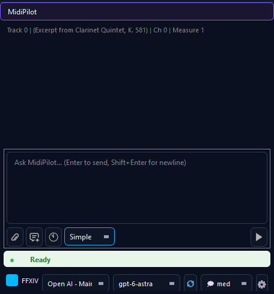
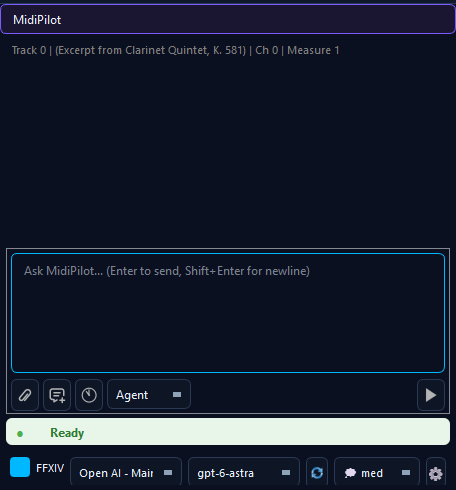

MidiPilot - Your AI Copilot
MidiPilot is the AI brain embedded directly in MidiEditor AI. Open the sidebar panel, type what you want in plain English, and watch it compose, edit, transform, and analyze your MIDI data automatically.
Key Features
🎯 Agent Mode
Multi-step agentic loop - the AI calls tools iteratively, inspecting results between steps to build complex compositions from a single prompt.
Learn more →💬 Simple Mode
Single request/response for quick edits, small transformations, and focused tasks without the overhead of multi-step planning.
Learn more →🎮 FFXIV Bard Mode
Enforces Final Fantasy XIV Performance constraints - 8 tracks, monophonic, C3-C6 range, tonal drum conversion for MidiBard2 octets.
Learn more →🔌 Multi-Provider
OpenAI, OpenRouter, Google Gemini, a local Ollama server, or any OpenAI-compatible endpoint. Bring your own API key - or none at all for local models.
Learn more →🧠 Reasoning Support
Toggle thinking/reasoning for o-series and GPT-5.x models. Configurable effort from None to Extra High.
Learn more →✏️ Custom System Prompts
Edit AI behavior per mode via the built-in editor. Export/import as JSON - no recompiling needed.
Learn more →📜 Conversation History
Conversations auto-saved as JSON. Browse, search, and resume past sessions from the history menu.
Learn more →⚡ Response Streaming
Simple and Agent mode stream live via SSE, including reasoning summaries, assistant text, and tool-call progress where providers support it.
Learn more →🔄 Model Management
Refresh provider model lists, filter non-chat models, pin favourites, and retry temporarily blocked streaming models without restarting.
Learn more →💾 Per-File AI Presets
Save model, provider, mode, and custom instructions per MIDI file. Auto-loaded when you open the file.
Learn more →Getting Started
- Open Settings (gear icon or Edit → Settings) and click the MidiPilot AI tab
- Select your Provider (Google Gemini is a great free option)
- Enter your API Key (get one from OpenAI, OpenRouter, or Google Gemini)
- Choose a Model (e.g., gemini-2.5-flash)
- Click Test Connection to verify everything works
- Close settings and open the MidiPilot panel from the sidebar
- Type a prompt and press Enter:
"Create an 8-bar jazz waltz in Bb major with piano, bass, and drums"
The AI will compose the requested music directly into the editor using its built-in tools. In Agent mode, it works iteratively - creating tracks, setting tempo, inserting notes, and validating the result step by step.
See Prompt Examples for more real-world prompts and a full demo.
Chat Panel
The MidiPilot panel features a clean chat interface with context-aware track info, mode selection (Agent / Simple), and model switching - all accessible without leaving the editor. Assistant bubbles and the live reasoning stream render Markdown (bold, italic, lists, fenced code, links); user and system bubbles stay plain text.


The input bar at the bottom provides quick access to everything you need:
- Mode selector - Switch between Agent (multi-step) and Simple (single response)
- New Chat - Start a fresh conversation (previous one is auto-saved to history)
- History - Browse and resume past conversations
- FFXIV checkbox - Enable FFXIV Bard Performance constraints
- Model dropdown - Switch models on the fly without opening settings
- Reasoning level - Adjust thinking effort (when supported by the model)
- Token counter - Shows session usage vs. context window size
- Send / Stop - Send your prompt or cancel an in-progress Agent run
- Settings gear - Opens MidiPilot Settings… (the Settings dialog, already on its MidiPilot AI page), Prompt Profiles…, and Save AI preset for this file…
- Status indicator - Shows Ready, Thinking, or error states in real time
Mode Comparison
| Feature | Simple Mode | Agent Mode |
|---|---|---|
| API Calls | 1 (one-shot) | Multiple (iterative loop) |
| Tool Access | None | 27 tools (32 with FFXIV) |
| Self-Correction | No | Yes - can inspect and fix |
| Token Limit Risk | High for complex tasks | Low - work is split |
| Truncation Handling | Warns, suggests Agent mode | Per-step, can continue |
| Speed | Fast (single round-trip) | Slower (multiple round-trips) |
| UI Feedback | Streaming text or action preview | Live thoughts, assistant text, and Agent Steps panel |
| Undo | Per action | Granular - one Ctrl+Z per tool call |
| Ideal For | Quick edits, small changes | Complex compositions, multi-track |
Where to go next
The rest of MidiPilot is split across four pages. Each box names the page and lists the sections on it - the section links take you straight to the right spot.
Simple mode and Agent mode in full, response streaming, the right-click entry that asks about a selection, the questions MidiPilot answers from the manual itself, and the conversation history.
What the FFXIV checkbox enforces, the five FFXIV tools, the arrangement guidance behind them, and the deterministic Fix X|V Channels tool that needs no AI call.
Provider and model setup including local Ollama, prompt profiles and system prompts, per-file presets, auto-save, the token counter, and the API log.
Every tool the model can call in Agent mode, with what each one does - plus the MCP server that offers the same set to external AI clients.